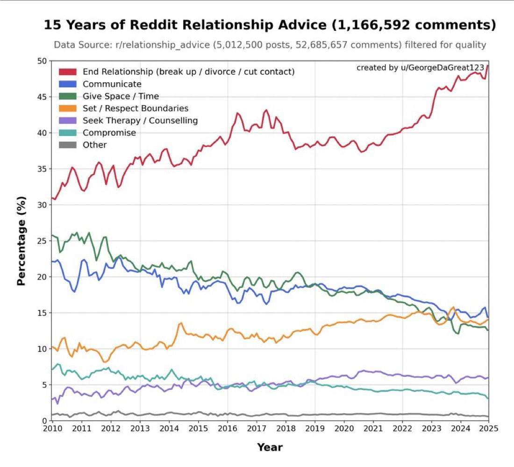

🎯 Ödevin Amacı
Bu ödevin temel amacı, büyük veri setlerinden ilginç ve beklenmedik bir gözlem (insight) keşfetmenizdir. Tıpkı bir araştırmacının milyonlarca veri noktasını inceleyerek herkesin gözünden kaçan bir örüntüyü yakalaması gibi, sizin de açık veri platformlarındaki veri setlerini tarayarak şaşırtıcı bir bulgu ortaya koymanız bekleniyor.
Kod yazarken ChatGPT, GitHub Copilot, Claude gibi yapay zeka araçlarından yardım alabilirsiniz. Önemli olan soruyu doğru sormak, veriyi doğru yorumlamak ve ilginç bir hipotez geliştirmektir. Yapay zeka size kodu yazmada yardımcı olabilir, ancak "hangi soruyu sormalıyım?" ve "bu bulgu neden ilginç?" kısmı tamamen size ait.
Kısacası yapmanız gereken:
- Kaggle, HuggingFace, GitHub gibi platformlardaki açık veri setlerini keşfedin
- İlginç bir hipotez/teori oluşturun ("Acaba X ile Y arasında bir ilişki var mı?")
- Python kodu yazarak hipotezinizi test edin
- Bulgunuzu görselleştirin ve yorumlayın
- Sonuçlarınızı sınıfta sunun
🔗 GitHub Classroom
Ödevinizi GitHub Classroom üzerinden teslim edeceksiniz. Aşağıdaki davetiye linkine tıklayarak ödev reposunu oluşturun. Yazdığınız kodları, raporunuzu ve sunum dosyanızı bu repoya yükleyin.
Davetiye linkine tıkladığınızda bir GitHub reposu sizin için otomatik oluşturulacak. Tüm çalışmalarınızı bu repoya commit ve push ederek yükleyin. Son teslim tarihinden sonraki commit'ler değerlendirmeye alınmayacaktır.
📋 Kurallar ve Detaylar
Bu tarihten sonraki commit'ler kabul edilmez.
🚀 Nasıl Yapılacak?
Veri Platformlarını Keşfedin
Kaggle, HuggingFace Datasets, GitHub üzerindeki açık veri setlerini tarayın. Hangi konular ilginizi çekiyor? Spor, müzik, sosyal medya, sağlık, ekonomi, oyunlar? İlgi alanınıza göre bir veri seti seçin.
Bir Hipotez / Soru Oluşturun
Bir ön beklenti belirleyin: "Acaba pahalı Airbnb'ler daha iyi puan alır mı?", "Hangi programlama dilleri Stack Overflow'da en hızlı büyüyor?", "Reddit'te olumsuz başlıklar daha fazla etkileşim alır mı?" gibi. Hipoteziniz ne kadar spesifik olursa analiz o kadar güçlü olur.
Python ile Analiz Edin
Veri setini indirin veya API ile çekin. pandas, matplotlib, seaborn gibi kütüphanelerle veriyi işleyin, analiz edin ve görselleştirin. Jupyter Notebook veya Google Colab kullanmanız önerilir.
Bulgularınızı Yorumlayın
Sadece grafik çizmek yetmez! Bulgularınızı yorumlayın: Neden bu sonuç çıkmış olabilir? Beklentinizle uyuşuyor mu? Şaşırtıcı olan ne? Bir "veri hikayesi" anlatın.
Rapor ve Sunum Hazırlayın
Bulgularınızı bir rapor (Markdown veya PDF) ve sunum dosyası (PowerPoint, PDF veya Google Slides linki) ile belgelendirin. Her ikisini de GitHub reposuna yükleyin.
📦 Teslim Edilecekler
GitHub Classroom reponuzda aşağıdaki dosyalar bulunmalıdır:
| Dosya/Klasör | Açıklama | Zorunlu? |
|---|---|---|
README.md | Grup üyeleri, hipotez, kısa özet, çalıştırma talimatları | ✅ Evet |
analiz.ipynb veya .py | Veri analizi Python kodu (Jupyter Notebook tercih edilir) | ✅ Evet |
rapor.md veya rapor.pdf | Bulgular, yorumlar, grafikler, veri kaynakları | ✅ Evet |
sunum.pptx veya sunum.pdf | Sınıf sunumu için hazırlanan sunum dosyası | ✅ Evet |
data/ | Kullandığınız veri seti (çok büyükse link verin) | ⭐ Önerilir |
requirements.txt | Kullandığınız Python kütüphaneleri | ⭐ Önerilir |
Veri seti çok büyükse (100 MB+), dosyayı repoya yüklemek yerine README.md dosyasında indirme linkini paylaşın. Git LFS de kullanabilirsiniz.
💡 İlham Verici Veri Hikayeleri
Aşağıdaki örnekler, büyük veri setlerinden çıkarılmış gerçek ve şaşırtıcı bulgulardır. Bunlar size "nasıl bir keşif yapabilirim?" sorusuna ilham verebilir. Benzer bir yaklaşımla siz de kendi veri hikayenizi ortaya koyabilirsiniz! Her hikayede analizin nasıl yapıldığı, hangi yöntemin kullanıldığı ve bulgunun neden şaşırtıcı olduğu açıklanmıştır.

📊 1. Reddit İlişki Tavsiyesi: "Ayrıl" Giderek Normalleşiyor
r/relationship_advice'daki 52 milyon yorum ve 15 yıllık veri analiz edildiğinde, "ilişkiyi bitir" tavsiyesi 2010'da %30 iken 2025'te %50'ye yaklaştı. "İletişim kur" %22→%14, "Uzlaş" %7→%3, "Zaman ver" %25→%13'e düştü. "Terapiye git" ise %1→%6'ya çıktı.
praw veya Pushshift API ile veri çekme → transformers / nltk ile metin sınıflandırma → matplotlib ile yıllık trend grafiği📰 2. Hacker News: Olumsuz İçerik 2x Daha Fazla Etkileşim
40 milyon Hacker News gönderisi analiz edildiğinde, %65'inin olumsuz duygu taşıdığı ve bu gönderilerin olumlu içeriklere göre iki kat daha fazla yorum aldığı tespit edildi. "Çöküş", "Başarısızlık", "Neden X Çalışmıyor?" başlıkları platformda dominant.
requests ile HN Firebase API → vaderSentiment ile duygu skoru → seaborn ile duygu-etkileşim scatter plot🤝 3. Facebook: Duygusal Bulaşma — 689.000 Kişilik Deney
Facebook, 2012'de 689.003 kullanıcının haber akışını gizlice manipüle etti: bir grubun akışından olumlu, diğerinin akışından olumsuz paylaşımlar filtrelendi. Sonuç: olumsuz içerik görenler daha olumsuz paylaşım yaptı; duygusal bulaşma fiziksel teması bile gerektirmiyordu. Çalışma PNAS dergisinde yayımlandı ve büyük etik tartışma başlattı.
pandas ile A/B test analizi → LIWC veya transformers duygu analizi → scipy.stats ile t-test😞 4. Sosyal Medya Yalnızlaştırıyor — Kullanım Türü Fark Etmiyor
7.000 Hollandalı yetişkinin ~10 yıl boyunca takip edildiği boylamsal çalışmada, hem aktif (paylaşım, yorum) hem de pasif (sadece bakma) sosyal medya kullanımının yalnızlık hissini artırdığı gösterildi. Bir feedback döngüsü var: yalnız kişiler sosyal medyaya yöneliyor, bu yalnızlığı daha da pekiştiriyor.
statsmodels ile fixed-effects regresyon → matplotlib ile zaman trendi🛒 5. Walmart: Kasırga Öncesi Çilek Pop-Tart Patlaması
Walmart'ın CIO'su Linda Dillman'ın ifadesiyle: şirket "trilyonlarca bayt" müşteri alışveriş geçmişi tutuyor. Hurricane Charley öncesindeki satış verilerini analiz ettiklerinde bira satışlarının zaten lider olmasını bekliyorlardı — ancak en büyük sürpriz, çilek aromalı Pop-Tart satışlarının kasırga öncesinde 7 kat artmasıydı.
scipy.signal.find_peaks)🛒 6. Craigslist: "Kaçırılmış Bağlantıların" Çoğu Walmart'ta
Craigslist'in "Missed Connections" (Kaçırılmış Bağlantılar) bölümündeki binlerce ilan analiz edildiğinde, en çok bahsedilen mekanın Walmart mağazaları olduğu ortaya çıktı. İnsanlar en çok market kasasında, otoparkta ve elektronik reyonunda "keşke konuşsaydım" diyor.
beautifulsoup4 ile web scraping → spacy ile NER → mekan frekans analizi⭐ 7. Amazon: Teşvikli Yorumlar Puanları Şişiriyor
Florida Üniversitesi'nden araştırmacılar 5.000+ Amazon ürünü üzerinde yaptıkları analizde, ücretsiz ürün karşılığı yazılan teşvikli yorumların puanları anlamlı biçimde şişirdiğini buldu. Daha da ilginci: "Bu ürünü indirimli aldım" notu bile eklense, şişirme etkisi kalıcıydı. Amazon'un teşvikli yorum programını sonlandırmasının ardından bile eski şişirilmiş puanlar satışları etkilemeye devam etti.
pandas ile yorum verisi analizi → scipy.stats ile grup karşılaştırma → seaborn ile puan dağılımı histogramı🏠 8. Airbnb: Fiyat ile Puan Arasında Neredeyse Sıfır Korelasyon
45.000+ Airbnb ilanı üzerinde yapılan analizde fiyat ile misafir puanı arasındaki korelasyon yalnızca 0.05 çıktı. Medyan puan 4.91 — piyasa, gerçek kaliteden bağımsız biçimde mükemmelliğe şişirilmiş durumda. "Tüm Ev/Daire" kategorisi ilanların %73'ünü oluşturup aynı zamanda en yüksek medyan puana sahip.
listings.csv dosyasından fiyat ve puan sütunları çekildi. Pearson korelasyon katsayısı r=0.05 civarında — istatistiksel olarak anlamlı olsa da pratik açıdan etkisiz. Araştırmacılar "puan şişirmesi"nin nedenini sosyal baskıya bağlıyor: misafirler ev sahibinden kötü yorum almaktan korkuyor. Bu, platform ekonomilerinde karşılıklı değerlendirme sistemlerinin güvenilirlik sorununa işaret ediyor.pandas ile Inside Airbnb CSV → scipy.stats.pearsonr ile korelasyon → seaborn.scatterplot + regresyon çizgisi🚗 9. Turuncu Araçlar: En İyi Fiyat/Performans Renk
Kaggle'daki kullanılmış araç satış veri setlerinde yapılan analizde, turuncu renkli araçların diğer renklere kıyasla en düşük fiyat-kalite oranına sahip olduğu — yani en az değer kaybeden araçlar olduğu ortaya çıktı. Sezgisel olarak "kimse turuncu araba istemez" diye düşünülse de, veriler turuncu aracın ikinci el piyasasında beklentilerin aksine iyi performans gösterdiğini kanıtlıyor.
🌪️ 10. Kadın İsimli Kasırgalar Daha Ölümcül
60 yıllık ABD kasırga verisi incelendiğinde, kadın isimli kasırgalar ortalama 42 ölüme, erkek isimli kasırgalar ise yalnızca 15 ölüme yol açmış. Sebebi: insanlar feminen isimli kasırgaları daha az tehlikeli algılayıp daha az hazırlık yapıyor.
gender_guesser ile isim sınıflandırma → statsmodels negatif binomial regresyon🍳 11. Kahvaltı Atlama ve Kalp Krizi: Harvard 16 Yıllık Takip
Harvard Üniversitesi'nde 26.902 erkek sağlık çalışanının 16 yıl boyunca takip edildiği çalışmada, düzenli olarak kahvaltı atlayanların kalp krizi geçirme riskinin %27 daha yüksek olduğu bulundu. Sigara, egzersiz, diyet ve BMI gibi faktörler kontrol altındayken bile ilişki devam etti.
lifelines ile survival analizi → Cox modeli → matplotlib ile Kaplan-Meier eğrisi🎂 12. Doğum Tarihleri: Eylül Avantajı ve Hafta Sonu Etkisi
İngiltere ve ABD doğum kayıtları (1994-2014) analiz edildiğinde, Eylül ayının en sık doğum ayı olduğu görüldü. Daha da ilginç olan: hafta sonu doğumları haftanın en düşük oranına sahip — sezaryen ve indüklenmiş doğumların hafta içine planlanması günlük dağılımı yapay olarak şekillendiriyor. 35 yaş üstü annelerin doğumları hafta içi günlere orantısız biçimde yoğunlaşıyor.
dayofweek ile yapıldı, aylık dağılım için chi-square testi uygulandı. Eylül'ün lider olması Noel/Yılbaşı dönemindeki gebe kalma oranına dayanıyor. "The Pudding" da bu veriyi interaktif olarak görselleştirdi — doğum gününüzde ölme olasılığınız normal günlere göre daha yüksek (birthday effect).pandas tarih gruplama → plotly ile ısı haritası (heatmap)😴 13. Fitbit: Sosyal Jet Lag ve Uyku Kaybı
6.5 milyon gecelik Fitbit uyku verisinden (6.700+ kullanıcı), hafta içi-sonu yatış saatleri 2+ saat farklılaşan kişilerin, 30 dakikadan az farklılaşanlara kıyasla geceleri ortalama yarım saat daha az uyuduğu bulundu. Ayrıca her ek uyku saatinin obezite ve uyku apnesi ihtimalini anlamlı düzeyde düşürdüğü, ancak fazla uyumanın da sağlık sorunlarıyla ilişkili olduğu gösterildi.
pandas ile hafta içi/sonu ayrımı → scipy.stats ile regresyon → seaborn ile U-eğrisi grafiği🌐 14. Chrome Kullananlar Daha İyi Çalışan
HR firması Xerox'un çalışan verilerini inceleyen araştırmacılar, Chrome veya Firefox ile iş başvurusu yapanların varsayılan tarayıcı (IE/Safari) kullananlara göre daha uzun süre işte kaldığını ve daha iyi performans sergilediğini keşfetti. Chrome'u kurmak bilinçli bir tercih — bu proaktifliğin genel göstergesi.
user-agents kütüphanesi ile User-Agent parse → lojistik regresyon✏️ 15. Büyük Harf Kullanımı = Kredi Güvenilirliği
Online kredi başvuru formlarını doğru büyük harf kullanarak dolduranlar, tümü küçük ya da tümü büyük harfle yazanlara göre daha güvenilir borçlular çıktı. Bir fintek girişiminin keşfi: gramer kurallarına uymak, genel kurallara uyma eğiliminin bir proxy göstergesi.
re ile metin özelliği çıkarma → sklearn ile lojistik regresyon feature importance💻 16. Stack Overflow: AI Kullanımı Artıyor, Güven Azalıyor
49.000+ geliştiricinin katıldığı 2025 Stack Overflow anketine göre yapay zeka araçlarını kullanan oran %76→%84'e çıkarken, yapay zekaya güven %43'ten %33'e düştü. Geliştiricilerin %66'sı "neredeyse doğru ama tam değil" çözümlerden şikayet ediyor — AI kodu yazmayı hızlandırıyor ama hata ayıklama yükünü artırıyor.
pandas ile SO Survey CSV yükleme → yıllık güven trendi → plotly ile role-bazlı bar chart📊 17. Stack Overflow: "Full Stack" Efsanesi ve Veri Mühendisliğinin Doğuşu
Stack Overflow'un 10 yıllık geliştirici anketi analiz edildiğinde, tam uzmanlaşma azalırken "full-stack geliştirici" oranı sürekli artış gösterdi. Veri mühendisliği rolü ise anket seçeneklerinde yalnızca 2019'dan itibaren belirdi — daha önce bu iş "back-end geliştirici" olarak tanımlanıyordu.
pandas DevType pivot → matplotlib stacked area chart📝 18. Wikipedia: Kibarlık Tuzağı — Güç Ele Geçirince Nezaket Düşüyor
Wikipedia editörlerinin davranışını inceleyen araştırmacılar, kibar editörlerin "admin" statüsüne daha kolay seçildiğini, ancak seçildikten sonra kibarlık puanlarının dramatik biçimde düştüğünü buldu. Güç ele geçirince nezaket azalıyor — ve bu veriyle kanıtlandı.
convokit (Cornell) politeness classifier → scipy.stats.ttest_rel ile paired t-test📝 19. Wikipedia Vandalizmi: Mesai Saatlerinde Zirve Yapıyor
Wikipedia düzenleme verisi analiz edildiğinde, vandalizm ve yıkıcı düzenlemelerin gece yarısı veya hafta sonlarında değil, mesai saatlerinde ve hafta içi gerçekleştiği ortaya çıktı. "İşten kaçma aracı" olarak Wikipedia kullanımı veride net biçimde görülüyor.
pandas ile timestamp gruplama → seaborn.heatmap ile gün×saat ısı haritası🎵 20. Spotify: Platformun Kendi Listeleri Süperstarları Geçiyor
34.000+ Spotify playlist ve ~2 milyon parça analiz edildiğinde, Spotify'ın kendi oluşturduğu playlist'lerin öne çıkarılmasının, bir süperstar eklenmesinden iki kat daha fazla takipçi getirdiği bulundu. Bir efsane sanatçı eklendiğinde günlük takipçi artışı yalnızca %0.5 civarında kalıyor.
spotipy) + playlist takipçi zaman serisi → event study analizi♟️ 21. Lichess: ELO'ya Göre Açılış Tercihleri ve Gece Hataları
6.25 milyon Lichess oyunu analiz edildiğinde, orta seviye oyuncuların belirli açılışlara saplanırken üst düzey oyuncuların çok daha geniş bir repertuvar kullandığı görüldü. Gece saatlerinde (00:00-02:00) hata oranları belirgin biçimde artıyor — "vandalizm benzeri" anlamsız hamleler bu saatlerde zirve yapıyor.
python-chess kütüphanesiyle her oyunun ilk 10 hamlesi ECO (Encyclopaedia of Chess Openings) koduna eşlendi. ELO aralığına göre açılış çeşitliliği Shannon entropy ile ölçüldü. Zaman analizi için UTC zaman damgaları kullanılarak saat bazlı blunder (büyük hata) oranları hesaplandı. Sonuç: ELO arttıkça açılış entropisi artıyor; gece 2'de oynayan herkesin hata oranı %40+ yükseliyor.python-chess ile PGN parse → ECO kodlama → scipy.stats.entropy ile çeşitlilik ölçümü → saat bazlı heatmap💕 22. OkCupid: 4 Mesaj Sonrası Görünüş Etkisi Siliniyor
OkCupid'in kendi veri blogunda ve CEO Christian Rudder'ın "Dataclysm" kitabında yayımlanan analiz: erkekler kadınlara 4'e 1 oranında daha fazla ilk mesaj atıyor. Ama eşleşme gerçekleşip 4 mesaj gidip geldikten sonra, karşı tarafın fiziksel çekiciliğinin etkisi dramatik biçimde azalıyor — kişilik öne geçiyor.
seaborn ile interaction decay grafiği🎭 23. Nicolas Cage Filmleri ve Havuz Boğulmaları — Sahte Korelasyonlar
Tyler Vigen'in 25.237 değişkenli veritabanında 636 milyondan fazla korelasyon hesaplandı. Nicolas Cage'in yıllık film sayısı ile ABD'deki havuz boğulmaları arasında neredeyse mükemmel korelasyon, margarin tüketimi ile Maine eyaletindeki boşanma oranı arasında r=0.99 bulundu. Bu, "korelasyon ≠ nedensellik" ve "data dredging" tehlikesinin en güzel örneği.
pandas ile zaman serisi verisi → itertools.combinations ile tüm çiftler → scipy.stats.pearsonr → en yüksek korelasyonları sıralama🚕 24. Uber: Yüksek Suç Oranı = Daha Fazla Yolculuk
San Francisco'daki Uber yolculuk verileriyle suç verileri karşılaştırıldığında, fuhuş, alkol ve hırsızlık oranlarının en yüksek olduğu semtlerin aynı zamanda en çok Uber çağrısı alan yerler olduğu ortaya çıktı. Neden? "Sabit olmayan nüfus yoğunluğu" — gece hayatı olan bölgelerde hem suç hem ulaşım talebi artıyor.
pearsonr korelasyon hesaplandı. Simpson paradoksu: mahalle bazında suç artışı gibi görünen şey, aslında gece nüfusu / gündüz nüfusu oranının bir sonucu. Confounding variable kontrolü yapıldığında doğrudan bir nedensellik bulunamadı.geopandas ile spatial join → suç türü × yolculuk yoğunluğu korelasyon matrisi🔍 25. Google Arama Verisi: Kolektif Anksiyetenin Barometresi
"İklim anksiyetesi" ve "eko-anksiyete" aramaları 2018-2023 arasında %4.590 arttı. Pandemi ilan edildiğinde panik atak aramalarında anlık bir spike gözlemlendi. Arama verisi, anketlerden çok daha hızlı kolektif ruh halini yansıtıyor.
pytrends kütüphanesi ile Google Trends API'den anahtar kelime bazlı arama hacmi zaman serileri çekildi. 2004-2023 arası 50 ülke verisi birleştirilerek küresel trend hesaplandı. İlginç ayrıntı: iklim anksiyetesi aramaları iklim olaylarına değil, medyatik kişilere tepki gösteriyor — Greta Thunberg'in BM konuşması anlık zirve yaratırken, gerçek iklim felaketlerinin etkisi daha kısa süreli. Arama verisi anketlerden ortalama 3-6 ay önce trend değişikliğini yakalar.pytrends ile Google Trends API → pandas zaman serisi → plotly ile interaktif olay etiketli grafik🏴☠️ 26. GitHub: Açık Kaynak Projelerde Tek Kişi Dominansı
GitHub'daki 10 milyon commit incelendiğinde, büyük "açık kaynak projelerin" commit'lerinin büyük çoğunluğunun tek bir geliştiriciden geldiği ortaya çıktı. "Topluluk projesi" olarak bilinen pek çok repo aslında tek kişilik çaba.
pandas ile commit groupby → Gini katsayısı hesaplama → matplotlib ile Lorenz eğrisi🍟 27. Facebook Beğenileri: Kıvırcık Patates = Yüksek Zeka
Cambridge Üniversitesi ve Microsoft'un ortaklaşa 58.000 Facebook kullanıcısı üzerinde yaptığı araştırmada, "Curly Fries" (kıvırcık patates kızartması) sayfasını beğenmenin yüksek zeka ile en güçlü ilişkiye sahip beğenilerden biri olduğu ortaya çıktı. Sebebi dolaylı: viral bir "zeki insanlar bunu beğenir" paylaşımı nedeniyle belirli bir ağ yapısı oluşmuş.
sklearn.decomposition.TruncatedSVD → beğeni tabanlı tahmin modeli🚢 28. Titanic: 3. Sınıf Erkekler 2. Sınıfı Geçti
Veri biliminin en çok çalışılan veri seti olan Titanic'te hâlâ şaşırtıcı bulgular var. Kadınların hayatta kalma oranı %74, erkeklerin %19 — bunu bekliyorsunuz. Ama beklemediğiniz: 3. sınıftaki yetişkin erkekler, 2. sınıftaki yetişkin erkeklerden iki kat daha fazla hayatta kaldı. Ayrıca yalnız seyahat eden 3. sınıf kadınlar, grupla seyahattan daha yüksek hayatta kalma oranına sahip — çünkü bazı kadınlar erkek eşlerinin yanında kalmayı tercih etti.
pandas.crosstab → scipy.stats.chi2_contingency → seaborn ile survival heatmap⛑️ 29. Shell: Çalışan Bağlılığı %1 Artınca İş Kazaları %4 Düşüyor
Petrol devi Shell'in iç verilerini analiz eden araştırmacılar, çalışan bağlılık (engagement) skorlarındaki her %1'lik artışın, iş kazası oranını %4 düşürdüğünü buldu. İşe bağlı çalışanlar güvenlik protokollerine daha sıkı uyuyor — motivasyon güvenliği direkt etkiliyor.
statsmodels ile panel veri fixed-effects regresyon → engagement skoru × kaza oranı scatter + trend🌐 Veri Platformları ve Kaynaklar
Aşağıdaki platformlarda binlerce açık veri seti bulabilirsiniz. Keşfetmeye başlayın!
🛠️ İpuçları ve Araçlar
Önerilen Python Kütüphaneleri
| Kütüphane | Kullanım Alanı | Kurulum |
|---|---|---|
pandas | Veri işleme, temizleme, analiz | pip install pandas |
matplotlib | Temel grafik ve görselleştirme | pip install matplotlib |
seaborn | İstatistiksel görselleştirme | pip install seaborn |
plotly | İnteraktif grafikler | pip install plotly |
scipy | İstatistiksel testler, korelasyon | pip install scipy |
nltk / transformers | Doğal dil işleme, duygu analizi | pip install nltk |
praw | Reddit API ile veri çekme | pip install praw |
pytrends | Google Trends verisi çekme | pip install pytrends |
chess | Satranç oyunu (PGN) analizi | pip install python-chess |
datasets | HuggingFace veri setleri | pip install datasets |
Örnek Analiz Yaklaşımı
# Genel metodoloji şablonu
import pandas as pd
import matplotlib.pyplot as plt
import seaborn as sns
# 1. Veri yükle
df = pd.read_csv('veri_seti.csv')
# 2. İlk bakış
print(df.shape)
print(df.describe())
print(df.head())
# 3. Hipotez: "X ile Y arasında bir ilişki var mı?"
# Örnek: fiyat ile puan arasındaki korelasyon
korelasyon = df['fiyat'].corr(df['puan'])
print(f"Korelasyon: {korelasyon:.3f}")
# 4. Görselleştirme
fig, ax = plt.subplots(figsize=(10, 6))
sns.scatterplot(data=df, x='fiyat', y='puan', alpha=0.3, ax=ax)
ax.set_title('Fiyat vs Puan — Beklenmedik Sonuç!')
ax.set_xlabel('Fiyat (₺)')
ax.set_ylabel('Puan')
plt.tight_layout()
plt.savefig('bulgu_grafik.png', dpi=150)
plt.show()
# 5. Yorum: "Korelasyon 0.05 — neredeyse sıfır!
# Pahalı olmak daha iyi puan garantisi değil."- Spesifik: "Reddit'te olumsuz başlıklar daha fazla yorum alır" ✅ vs "Reddit ilginç" ❌
- Test edilebilir: Veri ile doğrulanabilir veya çürütülebilir olmalı
- Şaşırtıcı potansiyeli olan: Sezgisel beklentiye aykırı bir sonuç çıkabilecek konular tercih edin
- Veri erişilebilir: Hipotezinizi test edecek veri setine erişiminiz olmalı
⚖️ Değerlendirme Kriterleri
| Kriter | Ağırlık | Açıklama |
|---|---|---|
| Hipotezin Özgünlüğü | %25 | Sorulan soru ilginç ve özgün mü? Sezgisel beklentiye aykırı bir bulgu var mı? |
| Teknik Uygulama | %25 | Python kodu çalışıyor mu? Veri doğru işlenmiş mi? Analiz yöntemi uygun mu? |
| Görselleştirme | %15 | Grafikler anlamlı ve okunabilir mi? Bulguyu iyi ifade ediyor mu? |
| Yorum ve Analiz | %20 | Bulgular sadece sayı değil, anlamlı bir hikaye olarak yorumlanmış mı? |
| Sunum | %15 | Sınıf sunumu açık, anlaşılır ve ikna edici mi? |
- Başka bir grubun çalışmasını kopyalamak akademik sahtekarlık sayılır ve tüm gruba 0 (sıfır) puan verilir.
- Yapay zeka çıktısını olduğu gibi kopyala-yapıştır yapmak yeterli değildir — veriyi ve bulguyu anladığınızı gösterin.
- Son teslim tarihinden (12 Nisan 2026, 23:59) sonraki commit'ler değerlendirmeye alınmaz.
- GitHub Classroom davetini kabul ettim, repo oluşturuldu
- README.md: grup üyeleri, hipotez, çalıştırma talimatları yazıldı
- Python kodu (analiz.ipynb / .py) çalışır durumda repoda
- Rapor (rapor.md veya rapor.pdf) yazılıp repoya yüklendi
- Sunum dosyası (sunum.pptx veya .pdf) repoya yüklendi
- Tüm dosyalar 12 Nisan 2026, 23:59'dan önce push edildi